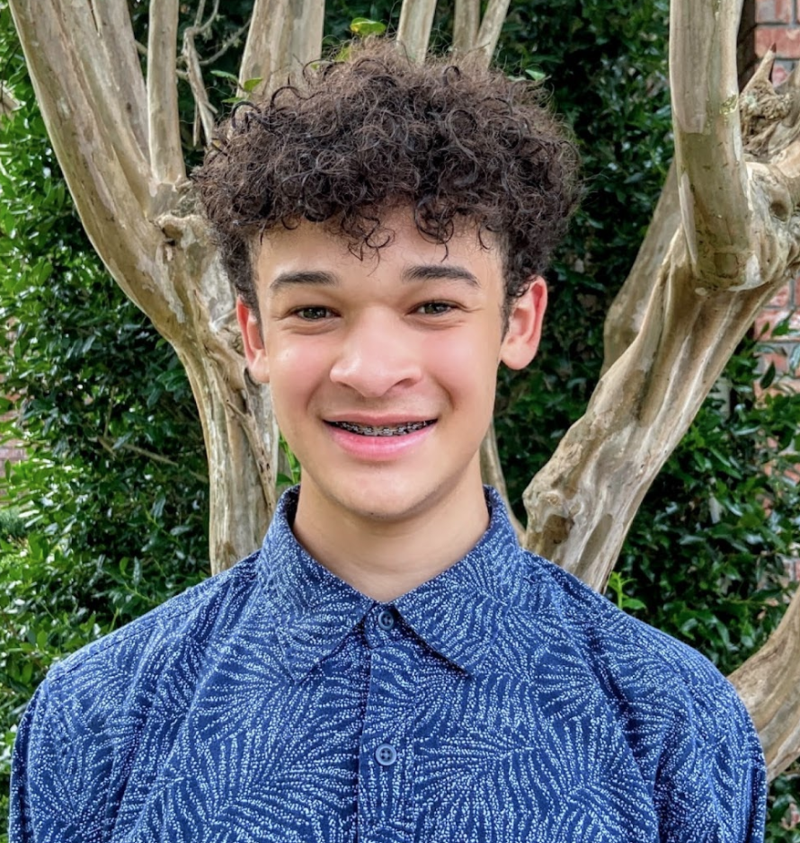

    <!-- Download Section -->
    <section id="download" class="content-section text-center">
        <div class="download-section">
            <div class="container-fluid">
                <h1>Our Leaders</h1>
                <div class="row">
                    <div class="col-sm-4" style="text-align: center;">
                        <h2>Julia Ding</h2>
                        <h4>President</h3>
                        <hr>
                        <p>Julia is a LASA junior interested in all things computer science and mathematics-related. 
                            She’s passionate about bridging educational and gender gaps and enjoys giving back to the community! 
                            In her free time, she enjoy playing the cello, puzzling out fun math problems, competing in hackathons, 
                            and making bad puns.
                        </p>
                    </div>
                    <div class="col-sm-4" style="text-align: center;">
                        <h2>Luisa Mao</h2>
                        <h4>Vice President</h3>
                          <hr>
                          <p>Luisa is a junior at LASA who loves all things computer science and is most interested in
                            learning more about quantum computing, especially its applications in cryptography.
                            She feels so grateful to have found a community of STEMinists who share many of her
                            passions and interests. Other than computer science, Luisa enjoys playing the piano and swimming.
                            She also has a strong interest in pure math and is part of the math community at LASA.
                          </p>
                    </div>
                    <div class="col-sm-4" style="text-align: center;">
                        <h2>Connor McDonald</h2>
                        
                        <hr>
                        <h3></h3>
                        <p>Connor is a sophomore at LASA who enjoys everything STEM-related. He's part of Hack Club 
                            because he wants to help make the field of computer science more accessible for 
                            underrepresented groups. Connor also enjoys playing both baseball and basketball. 
                            He is an avid guitarist as well.
                        </p>
                    </div>
                </div>
              </div>
        </div>
    </section>
